Renderização em Stereo
Instalar o Add-On (python script)
1- Faça download do python script mais actualizado para uma pasta. (http://www.noeol.de/s3d/). Na altura em que este tutorial foi escrito, o script chamava-se BstereoOffAxisCamera_0_5_5.
2- Inicie o Blender. Vá ao menu File e active a janela de configuração User Preferences.
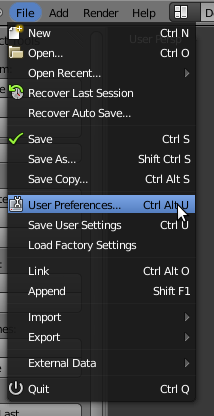3- Na janela User Preferences, vá ao painel Add-Ons e clique em Install Add-On.
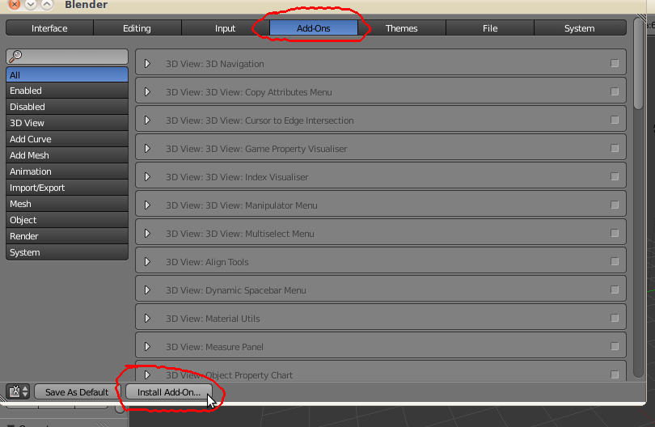4- Navegue até à pasta onde gravou o script, seleccione o script e clique em Install Add-On.

5- Nos scripts relativos à “Camera”, encontrará agora um novo script. Clique na caixa para activar o script. Se fechar a janela User Preferences, o script foca activo nesta sessão. Se clicar em Save As Default, o script ficará activo das próximas vezes que iniciar esta versão do Blender.
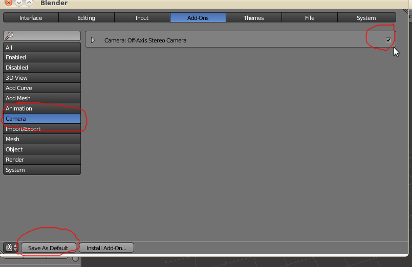Criar uma cena
6- Na janela 3D View, duplique duas vezes o cubo inicial e crie uma fila de cubos.
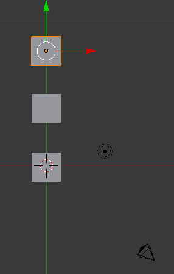7- Insira um Circle (Add > Curve > Circle). Insira um Empty e coloque-o ligeiramente acima do cubo do meio. Crie um parentesco (Ctrl+P) entre a câmara e o círculo mas escolha a opção Follow Path. Crie um Track (Ctrl+T) entre a câmara e o Empty mas escolha a opção Track To Constraint.
Não se esqueça de alterar o nº de frames do círculo (Path Animation) para 250.
Se estiver tudo bem, quando fizer Alt+A, a câmara deverá demorar 250 frames a percorrer o círculo e estará sempre apontada ao cubo do meio.
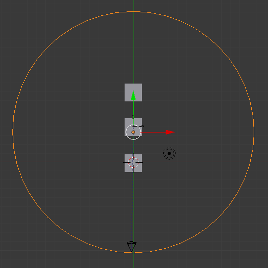8- Mude a lâmpada já existente na cena para tipo Sun. Insira um plano abaixo dos cubos que cubra toda a área abrangida pelo círculo. Aplique um material ao plano. Mude o valor Diffuse (a cor) do material dos cubos.
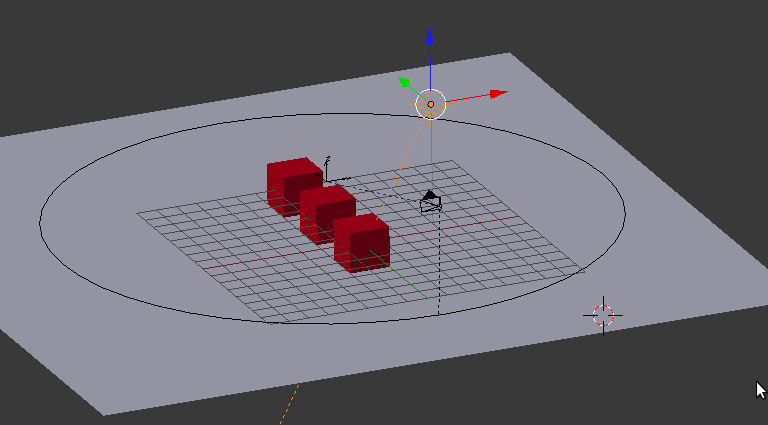Criar render anáglifo (vermelho / ciano)
9- Seleccione a câmara, vá ao painel Object Data da câmara. Se o script estiver instalado e activo, deverá surgir um novo painel com o nome Stereo Camera. Clique no botão Set Stereo Camera.
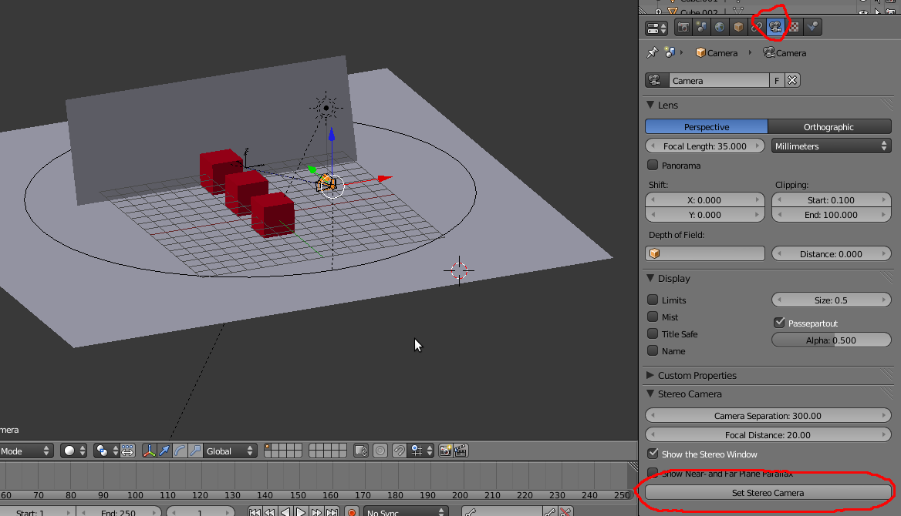10- O novo plano que surgiu na janela 3D View identifica a janela stereo: o que estiver entre o plano e a câmara irá surgir saliente, fora do display; o que estiver atrás do plano irá surgir “dentro” do display. O plano é controlado através do valor Focal Distance. Altere o valor e clique novamente em Set Stereo Camera até o plano estar localizado em cima do cubo do meio.
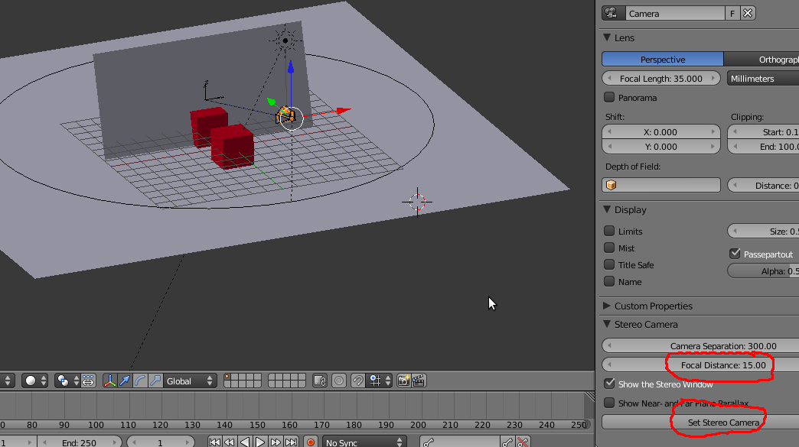11- Crie uma nova cena do tipo Link Objects e renomeie a nova cena para “esq” (sem “”).
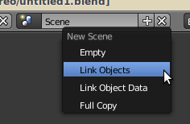12- Quando clicou em Set Stereo Camera, o script criou 2 novas câmaras. As suas cenas têm 3 câmaras, a original e duas criadas pelos script que correspondem à visão do olho esquerdo e direito. Na cena “esq”, seleccione a câmara da esquerda e defina a mesma como Set Active Object as Camera.
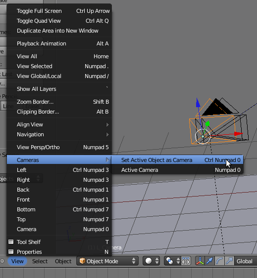13- Repita os dois passos anteriores mas agora atribua o nome “dir”, seleccione a câmara da direita e defina a mesma como Set Active Object as Camera. No final deverá ter 3 cenas: Scene (se activar a visão de câmara deverá ver através da câmara do meio, a original), esq (se activar a visão de câmara deverá ver através da câmara da esquerda) e dir (se activar a visão de câmara deverá ver através da câmara da direita).
14- Volte à Scene. Active a janela Node Editor e utilize a configuração de nós abaixo apresentada.
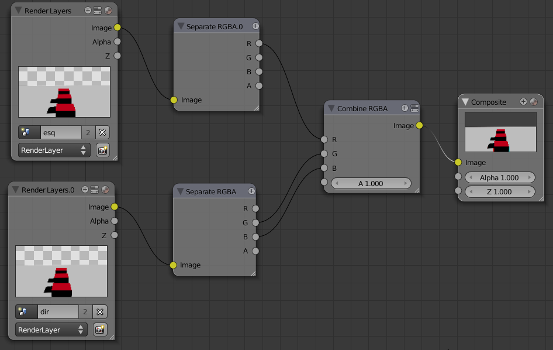15- Agora é só renderizar a sua animação e colocar os óculo vermelho/ciano.
Sugestão:
Crie uma cena em que a câmara está estacionária e mova os objectos na direcção da câmara, ultrapassando esta e saindo do enquadramento (vão para trás da câmara).